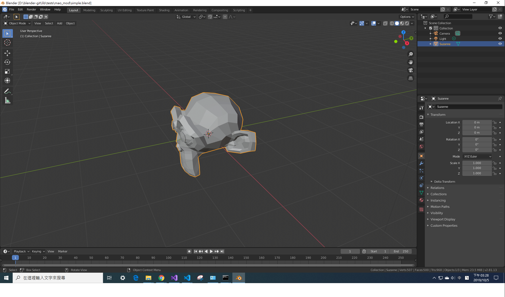

這邊是要做測試，
也就是讓他去自己跑一些功能的測試，
blender本身也有一些測試，可以先跑跑看。
後面會示範一下簡單的自己寫測試腳本(.py)
一、跑預設測試
首先先列下自己的架構(VS2019)
blender-git/
├──blender/
├──build_windows_Full_x64_vc16_Release/
└──lib/
然後要測試的話，官方預設的相關資料路徑有幾個
blender-git\blender\tests\
gtest是用來測C code的(應該?)
python是用來測py腳本的
然後是
blender-git\lib\tests
這邊你可能會找不到，因為要另外載這些source
打開cmd
cd blender-git\lib
svn checkout https://svn.blender.org/svnroot/bf-blender/trunk/lib/tests
載完應該就會看到裡面有很多資料夾，
這些資料夾就是各個測試所需要的資料，例如你需要預先開一個.blend來進行測試
原則上確認有這些東西就可以跑測試了
我們可以先預先跑跑看預設的測試
首先要先cmake過一次，因為我們的測試是用ctest，是cmake的檔案
cd blender_build
cmake ../blender
如果沒問題
ctest -N
這邊會列出來有哪些測試可以跑
後面有很多參數，你可以輸入
ctest -help
可以看到更多相關參數
然後執行全部的測試
ctest -C Release
這邊是指用release下去跑所有測試
通常不會全過，但我也不知道為什麼，可能是哪裡有設錯吧??
但是最後一定會跑出哪些Passed那些failed，
假設我這項沒過
Test #2: script_load_addons
那我想樣看單獨測試這項的詳細結果，
ctest -C Release -R script_load_addons -VV
-R表示測試檔案名稱
-VV表示顯示詳細
原則上這樣就可以看到哪邊出錯了。
二、寫自己的測試腳本
首先，我們要在前面提到的兩個地方創建自己的資料夾
這邊目的是區分自己的module，
我這邊就叫mao_mod
這邊要創建一些檔案跟修改
blender-git\blender\tests\
........├──其他檔案...
........├──CMakeLists.txt，要把mao_mod加入路徑
........└──mao_mod
................├──CMakeLists.txt，因為是用ctest，所以要在這個檔案加入或者說是註冊測試
................└──test_simple.py，就是測試用的腳本
blender-git\lib\tests\
├──其他檔案...
└──mao_mod
........└──simple.blend，就是預先載入的場景
blender-git\build_windows_Full_x64_vc16_Release\tests\
├──mao_mod，這邊要建這個資料夾放輸出的東西
└──其他檔案
下面每個檔案稍微解釋一下
1.
python/CMakeLists.txt
這個檔案本來就存在，只是我們要在最下面加上這行
add_subdirectory(mao_mod)
表示增加這個module給cmake知道
2.
python/mao_mod/CMakeLists.txt
這個就是要建的檔案
官網這邊說要寫(我把一些常數改掉了):
# ------------------------------------------------------------------------------
# GENERAL PYTHON CORRECTNESS TESTS
macro (MAO_TEST module test_name)
add_test(
NAME mao_test_${test_name}
COMMAND "$<TARGET_FILE:blender>" ${TEST_BLENDER_EXE_PARAMS} ${TEST_SRC_DIR}/${module}/${test_name}.blend
--python ${CMAKE_CURRENT_LIST_DIR}/test_${test_name}.py --
--testdir=${TEST_OUT_DIR}/${module}/output_${test_name}.blend
)
endmacro()
MAO_TEST(mao_mod simple)
由於這是cmake的code，所以可能要先去看一下相關語法，
這邊解釋一下，
這邊建了一個marco叫做MAO_TEST，
第一個參數是module，第二個是測試名稱，
最後一行我給的是mao_mod跟simple當參數。
進到函式，
add_test，就是增加一個test到ctest裡面。
NAME mao_test_${test_name}
那test的名子就是mao_test_${test_name}
也就是mao_test_simple
進一步來說就是如果到時候要ctest時，就是輸入:
ctest -C Release -R mao_test_simple
COMMAND "$<TARGET_FILE:blender>" ${TEST_BLENDER_EXE_PARAMS}${TEST_SRC_DIR}/${module}/${test_name}.blend
這邊就是會呼叫blnder去執行那個我們要預先載入的場景
"$<TARGET_FILE:blender>"
是blender.exe的位址
${TEST_BLENDER_EXE_PARAMS}
這是blender執行可以用到的參數(也就是用cmd開blender的時候可以輸入的參數)
後面會有例子來說怎麼用
${TEST_SRC_DIR}/mao_test/${module}/${test_name}.blend
這邊這段其實就是:
blender\..\lib\tests\mao_test\simple_scene.blend
也就是我們要預先載入的場景
--python ${CMAKE_CURRENT_LIST_DIR}/test_${test_name}.py --
這個就是blender執行的參數，
開啟一個目標腳本來RUN
${CMAKE_CURRENT_LIST_DIR}/test_${test_name}.py --
就是:
/mao_mod/test_simple.py
注意這邊後面還有寫"--"，這個是區分用的，
在這之後是test_simple.py要用的參數
--testdir=${TEST_OUT_DIR}/${module}/output_${test_name}.blend
這就是test_simple.py要用的參數，
至於怎麼定義就是要自己寫了，後面會提到。
可是只有這幾行是沒辦法跑的，
因為有一些變數沒有定義，
包含${TEST_BLENDER_EXE_PARAMS}或是${TEST_SRC_DIR}.
可以打開他寫好的module
python\collada\CMakeLists.txt來看
這邊簡單說明一下
# Some tests are interesting but take too long to run
# and don't give deterministic results
set(USE_EXPERIMENTAL_TESTS FALSE)
set(TEST_SRC_DIR ${CMAKE_SOURCE_DIR}/../lib/tests)
set(TEST_OUT_DIR ${CMAKE_BINARY_DIR}/tests)
# ugh, any better way to do this on testing only?
execute_process(COMMAND ${CMAKE_COMMAND} -E make_directory ${TEST_OUT_DIR})
可以看到定義了一些變數，其實就是對應到了前面我們建的兩個資料夾
TEST_SRC_DIR ，表示我們放場景資源的地方
TEST_OUT_DIR ，表示我們輸出場景的地方
後面
# all calls to blender use this
if(APPLE)
if(${CMAKE_GENERATOR} MATCHES "Xcode")
set(TEST_BLENDER_EXE_PARAMS --background -noaudio --factory-startup)
else()
set(TEST_BLENDER_EXE_PARAMS --background -noaudio --factory-startup --env-system-scripts ${CMAKE_SOURCE_DIR}/release/scripts)
endif()
else()
set(TEST_BLENDER_EXE_PARAMS --background -noaudio --factory-startup --env-system-scripts ${CMAKE_SOURCE_DIR}/release/scripts)
endif()
則是要讓blender在背後運行，不會直接打開，
可以不要加這段試試看，測試的時候blender會被打開
其實只要對應好路徑，這邊marco不一定要這樣寫
3.
python/mao_mod/test_simple.py
因為前面呼叫了這個腳本
--python ${CMAKE_CURRENT_LIST_DIR}/${module}/test_${test_name}.py
所以我們要來寫這個測試腳本，
這個檔案是python的，所以也要了解一下語法
這邊可以參考一下python/bl_test.py，
if __name__ == "__main__":
# So a python error exits(1)
try:
main()
except:
import traceback
traceback.print_exc()
sys.exit(1)
可以看到他就是執行main，如果有exception
就會跑sys.exit(1)，也就會在ctest時候跑出fail
所以你可以在main裡面做測試，
當然也可以自己寫raise拋出exception來測試
這邊也可以注意到他有寫
def arg_extract(arg, optional=True, array=False):
來辨識一些參數，例如:
# save blend file, for testing
write_blend = arg_extract("--write-blend", optional=True)
就是如果有寫--write-blend 就會把後面的path給write_blend，
所以我們就"參考"上面的東西來寫
import sys
import os
import bpy
def main():
argv = sys.argv
print(" args:", " ".join(argv))
argv = argv[argv.index("--") + 1:]
def arg_extract(arg, optional=True, array=False):
arg += "="
if array:
value = []
else:
value = None
i = 0
while i < len(argv):
if argv[i].startswith(arg):
item = argv[i][len(arg):]
del argv[i]
i -= 1
if array:
value.append(item)
else:
value = item
break
i += 1
if (not value) and (not optional):
print(" '%s' not set" % arg)
sys.exit(1)
return value
# create cube
bpy.ops.mesh.primitive_cube_add(size=1)
# save blend file, for testing
write_blend = arg_extract("--testdir", optional=True)
if write_blend is not None:
print(" Writing Blend: %s" % write_blend)
bpy.ops.wm.save_mainfile('EXEC_DEFAULT', filepath=write_blend)
else:
raise EOFError
if __name__ == "__main__":
# So a python error exits(1)
try:
main()
except:
import traceback
traceback.print_exc()
sys.exit(1)
簡單來講就是增加一個大小是1的cube，
並且輸出檔案，
輸出路徑就是前面marco裡面的
--testdir=${TEST_OUT_DIR}/${module}/output_${test_name}.blend
4.
blender-git\lib\tests\mao_mod\simple.blend
這邊我就隨便開一個場景建了一顆猴頭

5.
要在blender-git\build_windows_Full_x64_vc16_Release\tests\
建立一個資料夾mao_mod
如果沒有建，到時候會無法輸出，測試會fail
三、執行測試檔
首先還是要重新cmake
cd blender_build
cmake ../blender
然後再輸入
ctest -N
可以看到有新的test
Test #42: mao_test_simple
這樣就代表有cmake到，如果沒有，就要檢查一下有沒有漏，
比如說沒有add_subdirectory(mao_mod)
然後就執行吧
ctest -R mao_test_simple -C Release -VV
如果pass了不代表沒錯，
可以去檢查一下blender-git\build_windows_Full_x64_vc16_Release\tests\mao_mod
有沒有多一個檔案是output_simple.blend
有沒有多一個方塊
有的話就代表有跑成功了!
接下來要進一步測試就只要一般地去寫那個test_simple.py的測試腳本就好了!
總結一下
這邊有三個路徑
1.腳本路徑
D:\blender-git\blender\tests\python\mao_mod
2.資源路徑
D:\blender-git\lib\tests\mao_mod
3.輸出路徑
D:\blender-git\build_windows_Full_x64_vc16_Release\tests\mao_mod
原則上這些路徑可以隨便放，只要自己知道然後有對應好就好，
但是我看官方的檔案是這樣放的，那就跟著放吧。
以上!
雖然我大部分都還是照著官網下去做的，
由於大學只會寫C/C++，
所以碰到這個blender還蠻頭大，
但是還是硬著頭皮下去做，
雖然不是很難，但是第一次弄這種東西還使蠻煩的(苦笑
好像這個還可以近一步做單元測試，
這個就更不懂了，以後再說吧!